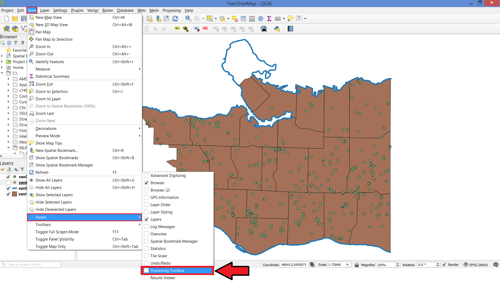
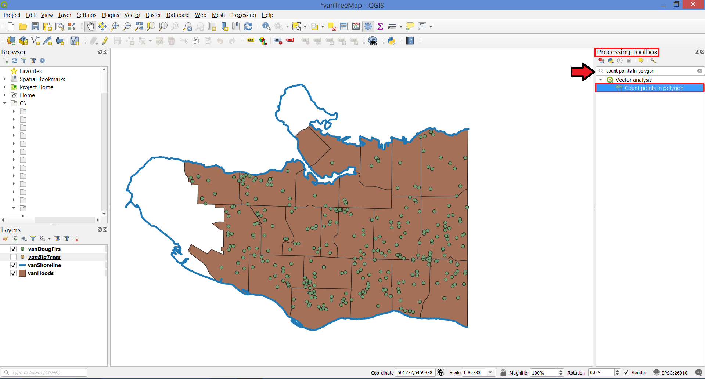
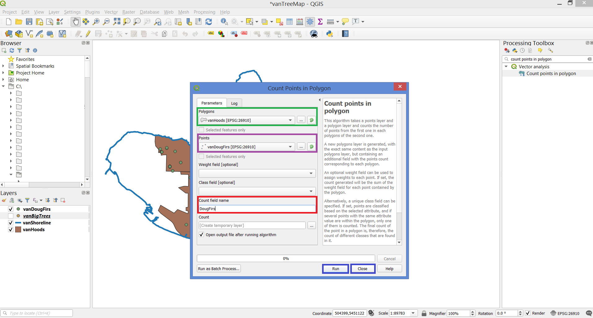
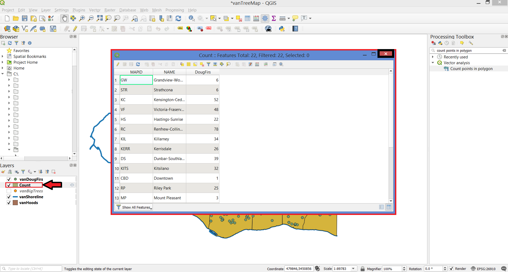
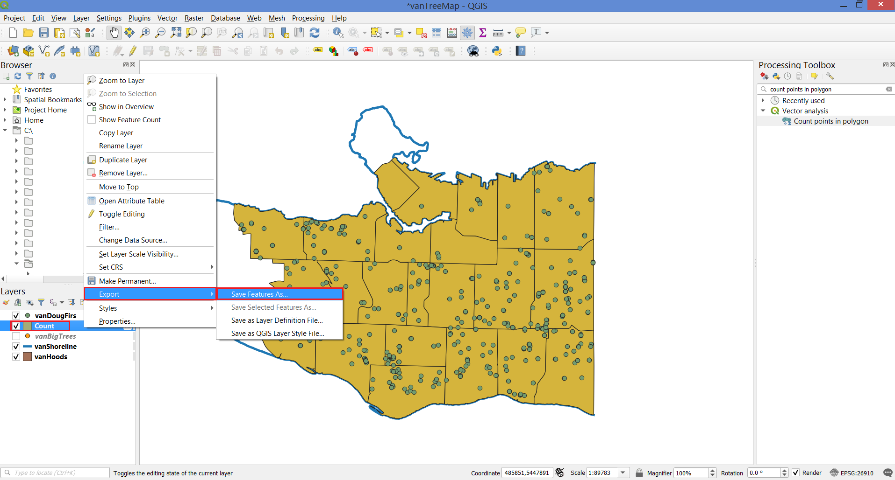
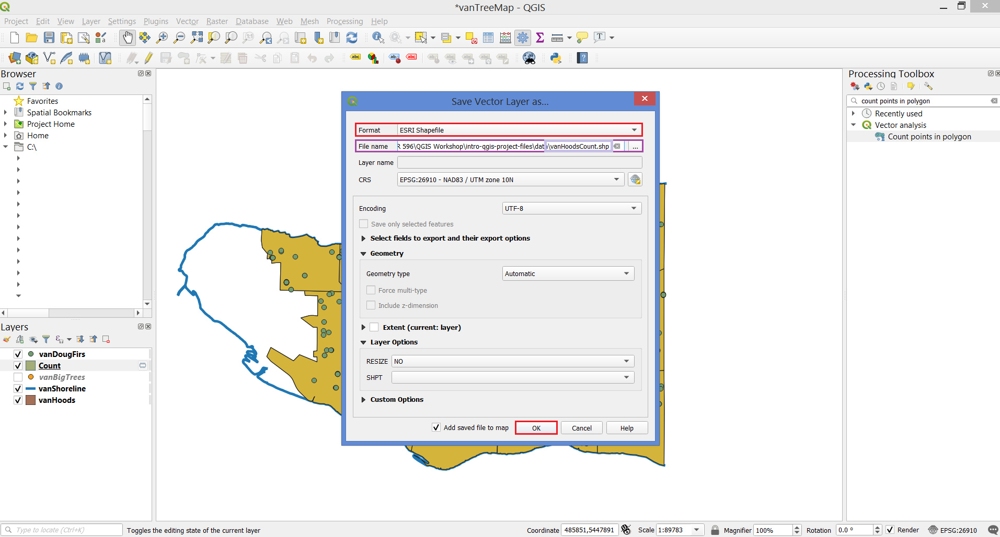
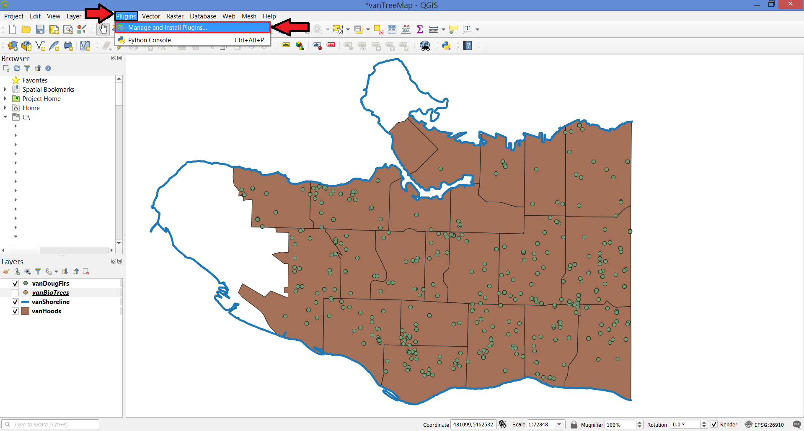
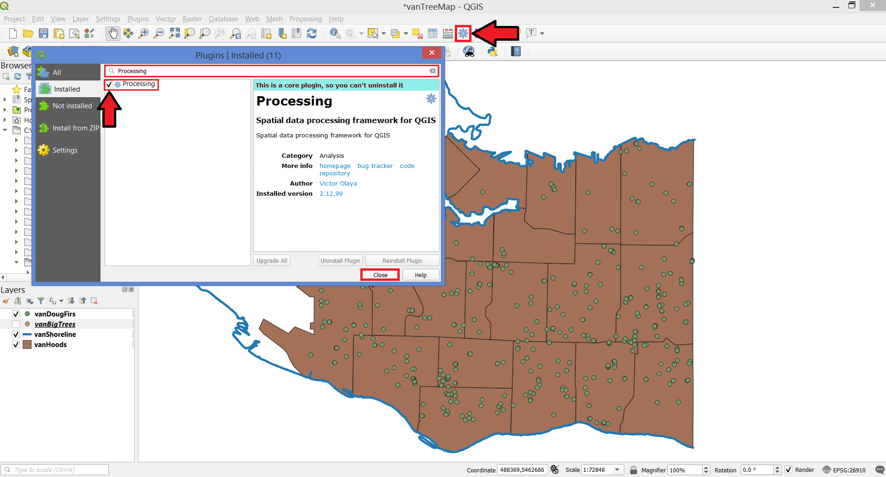

In the Main Menu, click on View, scroll down to Panels and select Processing Toolbox.
In case you can’t find the Processing Toolbox option, click here.

This is where you can find a large number of analytical and geoprocessing tools.
In the search bar, type “count points in polygon” and double-click the result.

In the new window, select:
Polygons: vanHoods (your input polygon layer)
Points: vanDougFirs (your input points layer)
Count field name: DougFirs (the name of the attribute that will have Doug Fir counts)
Click Run, then Close when the process has finished.

You should now have a new layer called Count. Take a look at the attribute table for this new layer and then close it.

Save this layer to your data folder by right-clicking and selecting Export - Save Features As..

In the new window, select
Format: Esri Shapefile
File name: navigate to the location of your project’s data, save the file as vanHoodsCount and click OK.

In case you didn’t find the Processing Toolbox:
In the Main Menu, click on Plugins, then click on Manage and Install Plugins…

On the search bar, type in Processing. Select the Processing box and then click Close.
You should now see the Toolbox icon and be able to proceed with the next steps.
